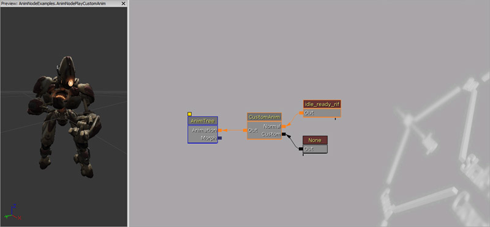
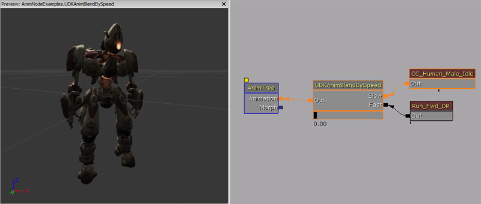

UDN
Search public documentation:
AnimationNodes
日本語訳
中国翻译
한국어
Interested in the Unreal Engine?
Visit the Unreal Technology site.
Looking for jobs and company info?
Check out the Epic games site.
Questions about support via UDN?
Contact the UDN Staff
中国翻译
한국어
Interested in the Unreal Engine?
Visit the Unreal Technology site.
Looking for jobs and company info?
Check out the Epic games site.
Questions about support via UDN?
Contact the UDN Staff
Animation Nodes
- Animation Nodes
- Overview
- How to think about animation blending when creating Anim Trees
- Animation Nodes
- Modifying animation nodes
- Referencing animation nodes within Unrealscript
- AnimTree ownership
- Uncategorized
- AnimNodeAimOffset
- AnimNodeBlend
- AnimNodeCrossfader
- AnimNodePlayCustomAnim
- AnimNodeScalePlayRate
- AnimNodeScaleRateBySpeed
- AnimNodeSlot
- AnimNodeSynch
- UDKAnimBlendByDriving / UTAnimBlendByDriving
- UDKAnimBlendByHoverboardTilt / UTAnimBlendByHoverboardTilt
- UDKAnimBlendByHoverboardTurn / UTAnimBlendByHoverboardTurn
- UDKAnimBlendBySpeed / UTAnimBlendBySpeed
- UDKAnimNodeCopyBoneTranslation / UTAnimNodeCopyBoneTranslation
- UDKAnimNodeJumpLeanOffset / UTAnimNodeJumpLeanOffset
- Filter
- Additive
- BlendBy
- AnimNodeBlendByBase
- AnimNodeBlendByPhysics
- AnimNodeBlendByPosture
- AnimNodeBlendByProperty
- AnimNodeBlendBySpeed
- AnimNodeBlendList
- UDKAnimBlendBase / UTAnimBlendBase
- UDKAnimBlendByFall / UTAnimBlendByFall
- UDKAnimBlendByFlying / UTAnimBlendByFlying
- UDKAnimBlendByHoverboarding / UTAnimBlendByHoverboarding
- UDKAnimBlendByHoverJump / UTAnimBlendByHoverJump
- UDKAnimBlendByIdle / UTAnimBlendByIdle
- UDKAnimBlendByPhysics / UTAnimBlendByPhysics
- UDKAnimBlendByPhysicsVolume / UTAnimBlendByPhysicsVolume
- UDKAnimBlendByPosture / UTAnimBlendByPosture
- UDKAnimBlendByTurnInPlace / UTAnimBlendByTurnInPlace
- UDKAnimBlendByVehicle / UTAnimBlendByVehicle
- Directional
- Mirror
- Random
- Animation Node Sequences
- Example
- Downloads
Overview
This page is a reference for all of the base animation nodes available in the Anim Tree Editor. Animation nodes are the building blocks for Unreal Engine 3's animation system. If you haven't already, please read the AnimationOverview document, as it gives a good introduction to the animation system in Unreal Engine 3. Each animation node is a self contained black box which takes in inputs from either animation nodes or animation sequences, outputting the results.
How to think about animation blending when creating Anim Trees
Animation blend nodes perform an operation using animation data created by an animator. Thus it takes input(s), transforms the bone translation and rotation and then outputs the results. The results of one animation blend can then be used in another. Animation blend nodes may also poll for data contained within the anim tree's owning actor. This allows the animator to quickly set up an anim tree that will work in most instances. When more complex behavior is required, a programmer can then step in to add the complexity.
Animation Nodes
- Title bar - Displays the name and/or pertinent information about properties of the animation node.
- Body - Displays the names associated with the input and output links.
- Blend slider - Displays the current blend percentage as a visual slider. You may also manually adjust the blend percentage by left clicking and dragging it left or right.
- Blend information - Displays the current blend percentage as a number.
- Outputs - Links that output to the results of the animation node operation.
- Inputs - Links that take in the value(s) to be used by the animation node.
Modifying animation nodes
Right clicking on the animation node's input boxes, brings up this context menu. You can break the current link the input has, rename the input or delete the input (if the animation node allows you to do so). Right clicking on the animation node itself, brings up this context menu. You can add extra inputs (if the animation node allows you to do so), break all existing links, delete the animation node, copy the animation node to the clipboard, duplicate the animation node within this AnimTree Editor and paste an animation node that is in the clipboard. By default animation nodes will have the animation node class name set in the title bar. You can alter this by using the Node Name property that is inside the "Anim Node" property category. The Node Name is also used to identify the animation node in Unrealscript; so try to have unique names for animation nodes if you wish to reference animation nodes at run time. However, unique animation node names are not enforced.Referencing animation nodes within Unrealscript
var Name AnimNodeBlendListName;
var AnimNodeBlendList AnimNodeBlendList;
var array<AnimNodeBlendList> AllAnimNodeBlendLists;
/*
* Called after initializing the AnimTree for the given SkeletalMeshComponent that has this Actor as its Owner
* this is a good place to cache references to skeletal controllers, etc that the Actor modifies
*/
event PostInitAnimTree(SkeletalMeshComponent SkelComp)
{
local AnimNodeBlendList LocalAnimNodeBlendList;
if (SkelComp == None)
{
return;
}
if (AnimNodeBlendListName != '' && AnimNodeBlendListName != 'None')
{
// Search for the animation node blend list by name.
AnimNodeBlendList = AnimNodeBlendList(SkelComp.FindAnimNode(AnimNodeBlendListName));
if (AnimNodeBlendList == None)
{
`Warn("AnimNodeBlendList is none.");
}
}
else
{
// Search for all animation node blend lists by class.
ForEach SkelComp.AllAnimNodes(class'AnimNodeBlendList', LocalAnimNodeBlendList)
{
AllAnimNodeBlendLists.AddItem(LocalAnimNodeBlendList);
}
}
}
simulated event Destroyed()
{
Super.Destroyed();
AnimNodeBlendList = None;
AllAnimNodeBlendLists.Length = 0;
}
AnimTree ownership
A brief note about AnimTree ownership. The actor that owns the skeletal mesh component, which instanced the AnimTree is the AnimTree's actor owner. This is important to remember because a few animation nodes look up variables in the AnimTree's actor owner.Uncategorized
AnimNodeAimOffset
In a game, you often want a weapon held by a character to point where that player is aiming. Because a Pawn is defined by a collision cylinder that is only able to rotate on the yaw axis and not the pitch or roll axis, it's difficult to simply rotate the pawn to make the player's aim. Even then, you may want the character's feet to remain locked in place. The red arrow shows the rotation of the Pawn, represented by the red collision cylinder. The Green Arrow shows where the player is aiming. We can then define the aiming direction as a relative rotation from the Pawn's base rotation. AnimNodeAimOffset takes an animation with no aim offset (the gun is pointing forward) as an input. AnimNodeAimOffset can alter several bones by adding a combination of rotation and translation offsets. These offsets are defined by nine poses:
- Center Center - Animation pose is aiming forward with no pitch or yaw adjustment.
- Center Up - Animation pose is aiming straight up with no yaw adjustments.
- Center Down - Animation pose is aiming straight down with no yaw adjustments.
- Left Center - Animation pose is aiming to the left with no pitch adjustments.
- Left Up - Animation pose is aiming to the upper left.
- Left Down - Animation pose is aiming to the lower left.
- Right Center - Animation pose is aiming to the right with no pitch adjustments.

- Right Up - Animation pose is aiming to the upper right.
- Right Down - Animation pose is aiming to the lower right.
- The AnimNodeAimOffset within the AnimTree editor. Double clicking on the animation node brings up the AimOffset editor.
- A 2D draggable slider to see the blended results of the AnimNodeAimOffset in the real time viewport within the AnimTree editor.
Using the AimOffset Editor
When using the editor, the first thing to do is to create a new profile. In the Profile section, click on "New", and type in the profile name. You can add several profiles per node, as well as delete them. On the tool bar above, note the "Open" and "Save" icons, as this lets you Import and Save profiles. Once a profile has been created, then the next step is to select which bones to affect. This can be done clicking on the "Add Bone" button of the AimOffset Editor. The select bones are displayed in increasing order with their index and name. Once the relevant bones have been selected, for each one of these you can edit the offsets for the nine poses. A bone is selected by clicking on its name in the Bones combo box. A pose is selected by clicking on the relevant button in the Aim Direction group. Above the Aim Direction group is a tool bar to select either Bone Translation or Bone Rotation editing. Toggling these will display a proper widget gizmo in the real time viewport for interactive editing. The "World Space Widget" check box toggles between local and world space widget editing. Edit fields are also available to enter numerical values directly.Baking Offsets from Animations
Instead of typing the offsets by hand, or using the widget gizmos, you can also extract offsets from animations. To do so, go to the node's properties, expand the Profiles section, select the profile index you wish to edit, and you'll find a few variables named AnimName_XX, with XX corresponding to all of the nine orientations. Set the animation names you'd like to use there and toggle the property bBakeFromAnimations. You don't need to assign animations to all nine poses, but you'll need at least the Center Center pose, as this is the reference pose, used to extract the offsets. When bBakeFromAnimations is clicked, the node will extract the offsets based on the difference between each pose and the reference pose.AnimNodeAimOffset Parameters
- Aim
- X - Normalized horizontal aim offset.
- Y - Normalized veritcal aim offset.
- Angle Offset
- X - Horizontal aim offset to append to Aim before processing.
- Y - Vertical aim offset to append to Aim before processing.
- ForceAimDir - Use ForcedAimDir, otherwise process the output based on Aim and Angle Offset.
- Bake From Animations - When checked, offsets will then be baked from animations.
- ForcedAimDir - Forced aim pose.
- Profiles
- Profile Name - Name of the profile, set by the AnimOffset Editor.
- Horizontal Range
- X - Minimum horizontal aim.
- Y - Maximum horizontal aim.
- Vertical Range
- X - Minimum vertical aim.
- Y - Maximum vertical aim.
- Anim Name LU - Animation which represents the avatar aiming / looking upper left.
- Anim Name LC - Animation which represents the avatar aiming / looking left.
- Anim Name LD - Animation which represents the avatar aiming / looking lower left.
- Anim Name CU - Animation which represents the avatar aiming / looking up.
- Anim Name CC - Animation which represents the avatar aiming / looking forward.
- Anim Name CD - Animation which represents the avatar aiming / looking down.
- Anim Name RU - Animation which represents the avatar aiming / looking upper right.
- Anim Name RC - Animation which represents the avatar aiming / looking right.
- Anim Name RD - Animation which represents the avatar aiming / looking lower right.
Using the node in game
Using this node will require the assistance of a programmer. You either need to reference each node in code, and have the Pawn directly modify the normalized Aim parameter. Note that if you reference animation nodes, you will need to clear them when the Actor is destroyed, otherwise they won't be garbage collected. Also, the node will be saved with the last edited profile. It is possible to switch profile during game play by calling the following functions from Unrealscript with SetActiveProfileByName() or SetActiveProfileByIndex(). This code snippet shows you how to create a pawn which will look at a player's pawn.
var(Pawn) float ViewYawMin;
var(Pawn) float ViewYawMax;
var(Pawn) float AimSpeed;
var AnimNodeAimOffset AimNode;
var Rotator DesiredAim;
var Rotator CurrentAim;
simulated event PostInitAnimTree(SkeletalMeshComponent SkelComp)
{
AimNode = AnimNodeAimOffset(SkelComp.FindAnimNode('AimNode'));
}
simulated event Destroyed()
{
Super.Destroyed();
AimNode = None;
}
simulated function Tick(float DeltaTime)
{
local PlayerController PlayerController;
Super.Tick(DeltaTime);
PlayerController = GetALocalPlayerController();
if (PlayerController != None && PlayerController.Pawn != None && AimNode != None)
{
DesiredAim = Rotator(Normal(Location - PlayerController.Pawn.Location));
DesiredAim.Pitch = Clamp(DesiredAim.Pitch, ViewPitchMin, ViewPitchMax);
DesiredAim.Yaw = Clamp(DesiredAim.Yaw, ViewYawMin, ViewYawMax);
if (DesiredAim != CurrentAim)
{
CurrentAim = RLerp(CurrentAim, DesiredAim, AimSpeed * DeltaTime, false);
}
// Adjust the pitch
if (CurrentAim.Pitch < 0)
{
AimNode.Aim.Y = Abs(float(CurrentAim.Pitch) / ViewPitchMax);
}
else if (CurrentAim.Pitch > 0)
{
AimNode.Aim.Y = float(CurrentAim.Pitch) / ViewPitchMin;
}
else
{
AimNode.Aim.Y = 0.f;
}
// Adjust the yaw
if (CurrentAim.Yaw > 0)
{
AimNode.Aim.X = float(CurrentAim.Yaw) / ViewYawMax;
}
else if (CurrentAim.Yaw < 0)
{
AimNode.Aim.X = Abs(float(CurrentAim.Yaw) / ViewYawMin) * -1.f;
}
else
{
AimNode.Aim.X = 0.f;
}
}
}
simulated function SetWeapAnimType(EWeapAnimType AnimType)
{
if (AimNode != None)
{
switch(AnimType)
{
case EWAT_Default:
AimNode.SetActiveProfileByName('Default');
break;
case EWAT_Pistol:
AimNode.SetActiveProfileByName('SinglePistol');
break;
case EWAT_DualPistols:
AimNode.SetActiveProfileByName('DualPistols');
break;
case EWAT_ShoulderRocket:
AimNode.SetActiveProfileByName('ShoulderRocket');
break;
case EWAT_Stinger:
AimNode.SetActiveProfileByName('Stinger');
break;
}
}
}
defaultproperties
{
}
Weapon Alignment Issues
The anim tree blends animations using Forward Kinematics (FK), and this causes problems with interpolation where bone positioning is important. And unfortunately this is the case with weapon aiming. The below picture shows the difference between Forward Kinematics and Inverse Kinematics (IK) interpolation that is necessary to understand this problem. When blending two animations using FK, the bone rotations are interpolated. In the case of weapon aiming, this results in having both left and right hands misaligned. There are several ways to get around that problem. One could glue the left hand at a fixed offset from the right hand, although that won't really fix the right hand being misaligned. What we really want is to interpolate the end positions of the hands, and determine the arm position from there, so both hands stay aligned together. So we need to use Inverse Kinematics (IK) to get that working properly. For performance reasons the aiming nodes do not provide a built in IK option, since it is quite costly to evaluate that for every single Aim node. However it is possible to fix this problem by using a specific skeleton hierarchy. "IK Bones" can be made (direct childs of the root bone), and moved by translation only, matching closely the position of the hands frame by frame. When different animations are now blended the hands will by default use FK blending (since they use rotations), and the IK bones IK (since they use translations). By using a SkelControlLimb (simple 2 bone IK solver bone controller) and triggering it on demand, it is possible to switch between FK and IK at will. The bone controller is used as some sort of post process effect, processed only once, instead of for every Aim node in the tree.AnimNodeBlend
This is a simple blend node that blends two inputs together. You can specify the desired blend target and how long it will take in seconds to blend to the final weight.
Properties
- Skip Blend When Not Rendered - Skips the blend instruction when the skeletal mesh is not being rendered.
Unrealscript functions
- SetBlendTarget(float BlendTarget, float BlendTime) - Sets the desired balance of this blend node.
- BlendTarget - Target amount of weight to put on the second input. This value should be between 0.f and 1.f.
- BlendTime - How long to take to get to the blend target.
How to use in Unrealscript
The example below shows how to blend between Child 1 and Child 2 with a blend time of half a second.
var AnimNodeBlend AnimNodeBlend;
simulated event Destroyed()
{
Super.Destroyed();
AnimNodeBlend = None;
}
simulated event PostInitAnimTree(SkeletalMeshComponent SkelComp)
{
AnimNodeBlend = AnimNodeBlend(SkelComp.FindAnimNode('AnimNodeBlend'));
}
simulated event Tick(float DeltaTime)
{
Super.Tick(DeltaTime);
if (AnimNodeBlend == None)
{
return;
}
if (AnimNodeBlend.BlendTimeToGo <= 0.f)
{
AnimNodeBlend.SetBlendTarget((AnimNodeBlend.Child2Weight >= 1.f) ? 0.f : 1.f, 0.5f);
}
}
defaultproperties
{
}
AnimNodeCrossfader
This blend node allows the anim tree to cross fade between two animations through script control. A typical usage scenario would be to blend between two player idle animations. This blend node requires 2 AnimNodeSequences as inputs, you cannot connect any other type of animation blend nodes.
Properties
- Default Anim Seq Name - Default animation sequence to play upon start up.
Unrealscript functions
- PlayOneShotAnim(name AnimSeqName, optional float BlendInTime, optional float BlendOutTime, optional bool bDontBlendOut, optional float Rate) - Plays a one shot animation.
- AnimSeqName - Name of animation sequence to play.
- BlendInTime - Time to blend from current animation to this (new) one.
- BlendOutTime - Time to blend from this animation (before it finishes playing) back to the previous one.
- bDontBlendOut - If true, animation will freeze at last frame, and not blend back to the old one.
- Rate - Playing rate of animation.
- BlendToLoopingAnim(name AnimSeqName, optional float BlendInTime, optional float Rate) - Blends in a looping animation
- AnimSeqName - Name of animation sequence to play.
- BlendInTime - Time to blend from current animation to this (new) one.
- Rate - Playing rate of animation.
- GetAnimName() - Returns the name of the animation that is currently playing
- GetActiveChild() - Returns the active AnimNodeSequence that is currently active.
How to use in Unrealscript
This code snippet shows how to cross fade between two different looping animations defined in the LoopingAnimNames array with a blend time of a quarter of a second.
var(Pawn) array<Name> LoopingAnimNames;
var AnimNodeCrossfader AnimNodeCrossfader;
var float NextBlendTime;
simulated event Destroyed()
{
Super.Destroyed();
AnimNodeCrossfader = None;
}
simulated event PostInitAnimTree(SkeletalMeshComponent SkelComp)
{
AnimNodeCrossfader = AnimNodeCrossfader(SkelComp.FindAnimNode('AnimNodeCrossfader'));
}
simulated event Tick(float DeltaTime)
{
Super.Tick(DeltaTime);
if (AnimNodeCrossfader == None)
{
return;
}
if (WorldInfo.TimeSeconds >= NextBlendTime)
{
AnimNodeCrossfader.BlendToLoopingAnim(LoopingAnimNames[Rand(LoopingAnimNames.Length)], 0.25f, 1.f);
NextBlendTime = worldInfo.TimeSeconds + 2.f;
}
}
defaultproperties
{
}
AnimNodePlayCustomAnim
This blend node gives code control to override an anim tree branch, with a custom animation. The normal branch is the normal tree branch, for example the upper body. The custom branch must be connected to an AnimNodeSequence. Thus, the blend node can then take over the upper body to play a custom animation given various parameters. 
Unrealscript functions
- PlayCustomAnim(name AnimName, float Rate, optional float BlendInTime, optional float BlendOutTime, optional bool bLooping, optional bool bOverride) - This function plays an animation back.
- AnimName - Name of the animation sequence to play.
- Rate - Animation play back rate.
- BlendInTime - Time in seconds to blend the animation in.
- BlendOutTime - Time in seconds to blend the animation out.
- bLooping - Loop the animation.
- bOverride - If the same animation sequence is set to be played again, the animation will be played again. Otherwise, attempting to play the same animation sequence will do nothing.
- PlayCustomAnimByDuration(name AnimName, float Duration, optional float BlendInTime, optional float BlendOutTime, optional bool bLooping, optional bool bOverride) - This function makes it easier to play an animation for x seconds.
- AnimName - Name of the animation sequence to play.
- Duration - How long in seconds this animation should play for.
- BlendInTime - Time in seconds to blend the animation in.
- BlendOutTime - Time in seconds to blend the animation out.
- bLooping - Loop the animation.
- bOverride - If the same animation sequence is set to be played again, the animation will be played again. Otherwise, attempting to play the same animation sequence will do nothing.
- StopCustomAnim(float BlendOutTime) - Stops the currently playing animation.
- BlendOutTime - Time in seconds to blend the animation out.
- SetCustomAnim(Name AnimName) - Switch currently played animation to another one.
- AnimName - Name of the animation sequence.
- SetActorAnimEndNotification(bool bNewStatus) - Enable or disable the OnAnimEnd() event.
- bNewStatus - True or false to enable or disable the event.
- GetCustomAnimNodeSeq() - Returns the AnimNodeSequence instance that is being used.
- SetRootBoneAxisOption(optional ERootBoneAxis AxisX, optional ERootBoneAxis AxisY, optional ERootBoneAxis AxisZ) - Sets the root bone axis that is used for Root Motion.
- AxisX - X Axis.
- AxisY - Y Axis.
- AxisZ - Z Axis.
How to use in Unrealscript
This code snippet shows how to use the AnimNodePlayCustomAnim node. It plays back random animations defined in CustomAnimNames with a blend in and blend out time of one tenth of a second. It will also play back the same animation if it is randomly chosen again.
var(Pawn) array<Name> CustomAnimNames;
var AnimNodePlayCustomAnim AnimNodePlayCustomAnim;
simulated event Destroyed()
{
Super.Destroyed();
AnimNodePlayCustomAnim = None;
}
simulated event PostInitAnimTree(SkeletalMeshComponent SkelComp)
{
AnimNodePlayCustomAnim = AnimNodePlayCustomAnim(SkelComp.FindAnimNode('AnimNodePlayCustomAnim'));
}
simulated event Tick(float DeltaTime)
{
Super.Tick(DeltaTime);
if (AnimNodePlayCustomAnim == None)
{
return;
}
if (!AnimNodePlayCustomAnim.bIsPlayingCustomAnim)
{
AnimNodePlayCustomAnim.PlayCustomAnim(CustomAnimNames[Rand(CustomAnimNames.Length)], 1.f, 0.1f, 0.1f, false, true);
}
}
defaultproperties
{
}
AnimNodeScalePlayRate
This animation node gives the anim tree control to override the input animation play rate. This would allow you to scale the animation in a single place.
Properties
- Scale By Value - Animation play back scale as a percentage.
How to use in Unrealscript
This example shows how to use the AnimNodeScalePlayRate node to scale the animation play back rate. The play back rate is scaled using Sin to perform a sinusoidal play back rhythm.
var(AnimTree) const Name ScalePlayRateAnimNodeName;
var(AnimTree) const float PlayRateOffset;
var AnimNodeScalePlayRate AnimNodeScalePlayRate;
simulated event PostInitAnimTree(SkeletalMeshComponent SkelComp)
{
if (ScalePlayRateAnimNodeName != '')
{
AnimNodeScalePlayRate = AnimNodeScalePlayRate(SkelComp.FindAnimNode(ScalePlayRateAnimNodeName));
}
}
simulated event Destroyed()
{
Super.Destroyed();
AnimNodeScalePlayRate = None;
}
simulated event Tick(float DeltaTime)
{
Super.Tick(DeltaTime);
AnimNodeScalePlayRate.ScaleByValue = (Sin(WorldInfo.TimeSeconds + PlayRateOffset) + 1) * 0.5f;
}
defaultproperties
{
}
AnimNodeScaleRateBySpeed
This animation node gives the anim tree control to override the input animation play rate based on the size of the velocity of the owning actor.
Properties
- Base Speed - Base speed to use when evaluating the final speed. For example, this should be equivalent to the maximum speed of your pawn; 600.f by default. If the size of velocity is 600.f then the play rate will be 1.f or normal speed. If the size of the velocity is 300.f then the play rate will be 0.5f or half the speed.
How to use in Unrealscript
This code snippet has a pawn which will adjust its GroundSpeed depending on how much health it has. As the pawn is damaged, it will move slower and the animation will also be played back slower.
event TakeDamage(int Damage, Controller InstigatedBy, vector HitLocation, vector Momentum, class<DamageType> DamageType, optional TraceHitInfo HitInfo, optional Actor DamageCauser)
{
Super.TakeDamage(Damage, InstigatedBy, HitLocation, Momentum, DamageType, HitInfo, DamageCauser);
GroundSpeed = default.GroundSpeed * (float(Health) / float(HealthMax));
}
defaultproperties
{
}
AnimNodeSlot
AnimNodeSlot is also covered here in Matinee Anim Control Track for its use with Matinee. Basically this node creates a "Slot" which allows Matinee, Unrealscript, to override an input with one or several animations. The purpose of this node is to play animations on demand, that don't necessarily have to be witin the anim tree. The best examples are one shot animations triggered by code (idle breaks, special moves, melee attacks, executions, deaths, etc). This allows to keep the anim tree at a reasonable size yet play a great number of one shot / unique animations. AnimNodeSlots know how to handle additive animations. By default they will add the additive animation to the Source input. But they can also treat the additive animation like normal animation data and perform a switch (if you were to have a sub branch in your tree that only dealt with additive data). For this behavior, set bAdditiveAnimationsOverrideSource to true.
Properties
- Early Anim End Notify - If true, then executee the OnAnimEnd event on the owning actor when we start blending out the animation. This usually improves transitions and blends, as we can start playing new animations as soon as this one starts blending out; as opposed to waiting until it is fully blended out.
- Skip Blend When Not Rendered - Do not blend when the skeletal mesh is not visible.
- Additive Animations Override Source - If true, then the additive animations override the source input. Otherwise additive animations are added to the source input.
Unrealscript functions
- PlayCustomAnim(name AnimName, float Rate, optional float BlendInTime, optional float BlendOutTime, optional bool bLooping, optional bool bOverride, optional float StartTime, optional float EndTime)
- AnimName - Name of animation to play.
- Rate - Rate that the animation should be played at.
- BlendInTime - Time in seconds to blend in the animation.
- BlendOutTime - Time in seconds to blend out the animation.
- bLooping - Should the animation loop and play forever until told to stop.
- bOverride - Play the same animation over again only if set to true.
- StartTime - When to start the animation (e.g. start at two seconds into the animation).
- EndTime - When to end the animation (e.g. end at four second into the animation).
- PlayCustomAnimByDuration(name AnimName, float Duration, optional float BlendInTime, optional float BlendOutTime, optional bool bLooping, optional bool bOverride) - Similar to the above function, except allowing you to control how long in seconds the animation is played over.
- AnimName - Name of animation to play.
- Duration - Time in seconds the animation should be played for.
- BlendInTime - Time in seconds to blend in the animation.
- BlendOutTime - Time in seconds to blend out the animation.
- bLooping - Should the animation loop and play forever until told to stop.
- bOverride - Play the same animation over again only if set to true.
- GetPlayedAnimation() - Returns the name of the currently played animation or '' if an animation is not playing.
- StopCustomAnim(float BlendOutTime) - Stop playing a custom animation.
- BlendOutTime - Time in seconds to blend out the animation.
- SetCustomAnim(Name AnimName) - Switch currently played animation to another one.
- AnimName - Name of animation to play.
- SetActorAnimEndNotification(bool bNewStatus) - Enable or disable the OnAnimEnd() event.
- bNewStatus - True of false to enable or disable the event.
- GetCustomAnimNodeSeq() - Returns AnimNodeSequence currently selected for playing animations.
- SetRootBoneAxisOption(optional ERootBoneAxis AxisX, optional ERootBoneAxis AxisY, optional ERootBoneAxis AxisZ) - Set custom animation root bone options.
- AxisX - X Axis.
- AxisY - Y Axis.
- AxisZ - Z Axis.
- SetRootBoneRotationOption(optional ERootRotationOption AxisX, optional ERootRotationOption AxisY, optional ERootRotationOption AxisZ) - Set custom animation root rotation options.
- AxisX - Roll Axis.
- AxisY - Yaw Axis.
- AxisZ - Pitch Axis.
- AddToSynchGroup(name GroupName) - Synchronize this animation with others.
- GroupName - Synchronization group name.
- TickChildWeights(float DeltaSeconds) - Advance time regarding child weights.
- DeltaSeconds - Time in seconds to advance the child weights.
How to use in Unrealscript
This code snippet shows how to play back a random animation defined in CustomAnimNames half way through the previous animation. As long as AnimNodeSlot has enough slots, it will be able to tween smoothly across them.
var(Pawn) array<Name> CustomAnimNames;
var AnimNodeSlot AnimNodeSlot;
var float NextAnimationTime;
simulated event Destroyed()
{
Super.Destroyed();
AnimNodeSlot = None;
}
simulated event PostInitAnimTree(SkeletalMeshComponent SkelComp)
{
AnimNodeSlot = AnimNodeSlot(SkelComp.FindAnimNode('AnimNodeSlot'));
}
simulated event Tick(float DeltaTime)
{
local float Duration;
Super.Tick(DeltaTime);
if (AnimNodeSlot == None)
{
return;
}
if (WorldInfo.TimeSeconds >= NextAnimationTime)
{
Duration = AnimNodeSlot.PlayCustomAnim(CustomAnimNames[Rand(CustomAnimNames.Length)], 1.f, 0.3f, 0.3f, false, true);
NextAnimationTime = WorldInfo.TimeSeconds + (Duration * 0.5f);
}
}
defaultproperties
{
}
AnimNodeSynch
The AnimNodeSynch node is now obsolete, and replaced by the AnimGroup system found in the AnimTree node (root node of the blend tree). Please read Animation Overview for more information. AnimNodeSynch continues to be functional, but support will be discontinued, it is recommended to transition to the new system. The screen shot below demonstrates how to add new animation groups into the Anim Tree. Once you have set up the animation groups, you then need to set the animation node sequences to be part of the animation group.
UDKAnimBlendByDriving / UTAnimBlendByDriving
This node automatically blends to the 'Driving' branch if the owner is either driving a vehicle, or it is a vehicle being driven.
Unrealscript functions
- UpdateDrivingState() - Forces an update of the driving state. This is useful if the animation blend is not currently relevant, thus not being ticked.
UDKAnimBlendByHoverboardTilt / UTAnimBlendByHoverboardTilt
This node automatically blends between the branches to reflect the state of the player tilting on the hover board.
Properties
- TiltScale - Scales the lean weights.
- TiltDeadZone - If the turn magnitude is below this, then the node blend to the 'Flat' branch.
- TiltYScale - Scales the up vector used in calculating the tilt angle.
UDKAnimBlendByHoverboardTurn / UTAnimBlendByHoverboardTurn
This node automatically blends between the branches to reflect the state of the player turning on the hover board.
Properties
- TurnScale - Scales the turning velocity, which scales the resulting weight.
- MaxBlendPerSec - Sets the maximum blend change per second, this tweaks how fast the branches blend.
UDKAnimBlendBySpeed / UTAnimBlendBySpeed
This node automatically blends between 'Slow' and 'Fast' depending on the velocity of the skeletal mesh component's owner. This is simplified version of AnimBlendBySpeed. 
Properties
- MinSpeed - Minimum speed; at this or below this, the node blends to the 'Slow' branch.
- MaxSpeed - maximum speed; at this or above this, the node blends to the 'Fast' branch.
UDKAnimNodeCopyBoneTranslation / UTAnimNodeCopyBoneTranslation
This node automatically copies bone translations to allow the AnimTree to simulate different styles of equipping weapons. This node is used in conjection with AnimNodeAimOffset, UDKAnimNodeSeqWeap / UTAnimNodeSeqWeap and UDKAnimBlendByWeapType / UTAnimBlendByWeapType. This node detects profile changes in an attached aim node, and then updates all connected UDKAnimNodeSeqWeap / UTAnimNodeSeqWeap and UDKAnimBlendByWeapType / UTAnimBlendByWeapType nodes of the profile change. It also copies source bone transformations into the destination bone transformations.
Properties
- DefaultBoneCopyArray - Array of source and destination bone names.
- SrcBoneName - Source bone name to get the bone transformation.
- DstBoneName - Destination bone name to set the bone transformation.
- DualWieldBoneCopyArray - Array of source and destination bone names to use if the AnimNodeAimOffset profile is named 'DualPistols'.
- SrcBoneName - Source bone name to get the bone transformation.
- DstBoneName - Destination bone name to set the bone transformation.
UDKAnimNodeJumpLeanOffset / UTAnimNodeJumpLeanOffset
This node acts in a similar way to AnimNodeAimOffset, except that it also uses another AnimNodeAimOffset's aim as the direction. This node is used for handle interpolation so that the player's character looks like it is leaning is the correct direction as the character is jumping or falling.
Properties
- JumpLeanStrength - Amount to activate the 'jump lean' node.
- MaxLeanChangeSpeed - How quickly the leaning can change.
- bMultiplyByZVelocity - If we should invert the leaning when coming down.
- bDodging - Set by native code if the player is dodging. When this is true, it will change its own profile to ControllerName_DBLJUMP.
- bDoubleJumping - Set by native code if the player is performing a double jump. When this is true, it will change its own profile to ControllerName_DODGE.
Unrealscript functions
- SetLeanWeight(float WeightTarget, float BlendTime) - Allows blending in and out of leaning over time.
- WeightTarget - Desired weight target.
- BlendTime - Time in seconds to blend to the desired weight target.
How to use in Unrealscript
class ExampleUDKAnimNodeJumpLeanOffset extends Pawn
placeable;
var UDKAnimNodeJumpLeanOffset UDKAnimNodeJumpLeanOffset;
var bool Flipper;
simulated event Destroyed()
{
Super.Destroyed();
UDKAnimNodeJumpLeanOffset = None;
}
simulated event PostInitAnimTree(SkeletalMeshComponent SkelComp)
{
UDKAnimNodeJumpLeanOffset = UDKAnimNodeJumpLeanOffset(SkelComp.FindAnimNode('UDKAnimNodeJumpLeanOffset'));
if (UDKAnimNodeJumpLeanOffset != None)
{
SetLeanWeight();
SetTimer(1.f, true, NameOf(SetLeanWeight));
}
}
simulated event SetLeanWeight()
{
if (UDKAnimNodeJumpLeanOffset != None)
{
UDKAnimNodeJumpLeanOffset.SetLeanWeight((Flipper) ? 0.f : 1.f, 0.2f);
Flipper = !Flipper;
}
}
defaultproperties
{
Begin Object Class=SkeletalMeshComponent Name=PawnMesh
End Object
Mesh=PawnMesh
Components.Add(PawnMesh)
Begin Object Name=CollisionCylinder
CollisionRadius=+0030.0000
CollisionHeight=+0072.000000
End Object
}
Filter
AnimNode_MultiBlendPerBone
This blend node allows you to create masks which have their own per bone blending and input sources. You may combine any number of masks together at different blend weights, and they can be automatically enabled or disabled based on rules you design. However it is not required and this blend node may be controlled using Unrealscript. This blend node reduces the number of nodes given it's functionality is compressed into a single blend node.
Properties
- Mask List - List of all the masks for this blend node.
- Branch List - An array of bone names and their specific weights for a given mask.
- Bone Name - Name of the bone to apply the blend to.
- Per Bone Weight Increase - Percentage of the mask weight to apply to this bone.
- Desired Weight - Desired weight to set this mask.
- Blend Time To Go - How much time left to go in seconds when blending in this mask. Not really useful within the AnimTree Editor.
- Weight Rule List - Rules that will automatically enable or disable this mask.
- Node Name - Name of the node to check.
- Weight Check - How the weight should be checked.
- Child Index - Child index of the node to check weight for.
- Weight Based On Node Rules - Is the weight of this mask calculated based on the weight rules?
- Disable For Non Local Human Players - If the owner is not a local human player, then ignore this branch.
- Branch List - An array of bone names and their specific weights for a given mask.
- Rotation Blend Type - How rotation should be blended.
Unrealscript functions
- SetMaskWeight(int MaskIndex, float DesiredWeight, float BlendTime) - Controls the weight of the given mask.
- MaskIndex - Index of the mask to apply properties to.
- DesiredWeight - Weight to give to the mask.
- BlendTime - Time in seconds for the mask to blend in.
How to use in Unrealscript
var AnimNode_MultiBlendPerBone AnimNode_MultiBlendPerBone;
var float NextBlendTime;
var int PreviousMaskIndex;
simulated event Destroyed()
{
Super.Destroyed();
AnimNode_MultiBlendPerBone = None;
}
simulated event PostInitAnimTree(SkeletalMeshComponent SkelComp)
{
AnimNode_MultiBlendPerBone = AnimNode_MultiBlendPerBone(SkelComp.FindAnimNode('AnimNode_MultiBlendPerBone'));
}
simulated event Tick(float DeltaTime)
{
local int NewMaskIndex;
Super.Tick(DeltaTime);
if (AnimNode_MultiBlendPerBone == None)
{
return;
}
if (WorldInfo.TimeSeconds >= NextBlendTime)
{
AnimNode_MultiBlendPerBone.SetMaskWeight(PreviousMaskIndex, 0.f, 0.25f);
NewMaskIndex = Rand(AnimNode_MultiBlendPerBone.MaskList.Length);
AnimNode_MultiBlendPerBone.SetMaskWeight(NewMaskIndex, 1.f, 0.25f);
PreviousMaskIndex = NewMaskIndex;
NextBlendTime = worldInfo.TimeSeconds + 2.f;
}
}
defaultproperties
{
}
AnimNodeBlendMultiBone
This animation node is deprecated and should not be used.
AnimNodeBlendPerBone
This is the same as AnimNodeBlend, only gives you per-bone control over how the 2 child animations are blended together. This node acts essentially as a per bone mask or filter. For example Child 1 takes the legs, and child 2 the upper body. The BranchStartBoneName array contains the bones parents that you want to mask out from Child 1, and take from Child 2. For the above example, you would put in that array the Spine1 bone name, and that would take care of the entire upper body.
Properties
- Force Local Space Blend - If true, blending is done in local space rather than world space. This may help preserve some of the animation from the Source input.
- Branch Start Bone Name - Array of bone names where the blending start at (affecting it and its children). You may have multiple bone names defined here if you wish to affect multiple disjointed parts of the skeleton.
Unrealscript functions
- SetBlendTarget(float BlendTarget, float BlendTime) - Sets the blending target allow you to blend the bone effects in and out.
- BlendTarget - Target to blend to. Should be either 0 or 1.
- BlendTime - Time to perform the blending.
How to use in Unrealscript
var AnimNodeBlendPerBone AnimNodeBlendPerBone;
var float NextBlendTime;
var bool BlendToChildTwo;
simulated event Destroyed()
{
Super.Destroyed();
AnimNodeBlendPerBone = None;
}
simulated event PostInitAnimTree(SkeletalMeshComponent SkelComp)
{
AnimNodeBlendPerBone = AnimNodeBlendPerBone(SkelComp.FindAnimNode('AnimNodeBlendPerBone'));
}
simulated event Tick(float DeltaTime)
{
Super.Tick(DeltaTime);
if (AnimNodeBlendPerBone == None)
{
return;
}
if (WorldInfo.TimeSeconds >= NextBlendTime)
{
BlendToChildTwo = !BlendToChildTwo;
AnimNodeBlendPerBone.SetBlendTarget((BlendToChildTwo) ? 1 : 0, 0.25f);
NextBlendTime = WorldInfo.TimeSeconds + 2.f;
}
}
defaultproperties
{
}
UDKAnimBlendBySlotActive / UTAnimBlendBySlotActive
This node blends fully to the Slot node only if the connected AnimNodeSlot is playing a custom animation or its current blend time is above zero. This blend node is useful if you want the AnimTree to automatically detect if the connected AnimSlot is playing an animation, if it is then it will automatically blend to it. This allows programmers to simply get an AnimNodeSlot to play an animation and for the AnimTree to automatically blend it in. An example of where this might be useful, is for playing back emotes that the player can trigger.
UDKAnimBlendByWeapon / UTAnimBlendByWeapon
This node blends in the 'Firing' branch when AnimFire is called. When the connected animation node sequence has stopped firing, if bLooping has been set false then AnimStopFire is called, otherwise the connected animation node sequence has it's animation changed to the looping anim sequence and is played in a looping fashion.
Properties
- Looping - Is this weapon playing a looped anim.
- Looping Anim - If set, after the fire anim completes this anim is looped instead of looping the fire anim.
- Blend Time - Animation blending time.
Unrealscript functions
- AnimFire(name FireSequence, bool bAutoFire, optional float AnimRate, optional float SpecialBlendTime, optional name LoopSequence = LoopingAnim) - Call to trigger the fire sequence. It will blend to the fire animation. If bAutoFire is specified, if LoopSequence is 'None' or unspecified, FireSequence will be looped, otherwise FireSequence will be played once and LoopSequence will be looped after that.
- FireSequence - Name of the animation sequence use for one off firing.
- bAutoFire - bLooping is set to this value.
- AnimRate - Rate to play the animation at.
- SpecialBlendTime - If set, this will override the default BlendTime.
- LoopSequence - Name of the animation sequence used for looping.
- AnimStopFire(optional float SpecialBlendTime) - Blends out the fire animation. This event is called automatically for non-looping fire animations; otherwise it must be called manually.
- SpecialBlendTime - If set, this will override the default BlendTime.
How to use in Unrealscript
class ExampleUDKAnimBlendByWeapon extends Pawn;
// Name of the firing weapon animation
var() const name FireSequenceName;
// Is the player holding an automatic firing weapon
var() const bool IsWeaponAutoFire;
// Animation play rate
var() const float FirePlayRate;
// Override blend time for fire animation
var() const float FireBlendTime;
// Name of the looping firing weapon animation
var() const name LoopingFireSequenceName;
var UDKAnimBlendByWeapon UDKAnimBlendByWeapon;
simulated event Destroyed()
{
Super.Destroyed();
UDKAnimBlendByWeapon = None;
}
simulated event PostInitAnimTree(SkeletalMeshComponent SkelComp)
{
UDKAnimBlendByWeapon = UDKAnimBlendByWeapon(SkelComp.FindAnimNode('UDKAnimBlendByWeapon'));
if (UDKAnimBlendByWeapon != None)
{
FireWeapon();
}
}
simulated function FireWeapon()
{
if (UDKAnimBlendByWeapon != None)
{
// Start the firing animation
UDKAnimBlendByWeapon.AnimFire(FireSequenceName, IsWeaponAutoFire, FirePlayRate, FireBlendTime, LoopingFireSequenceName);
// After a second, stop firing
SetTimer(1.f, false, NameOf(StopFireWeapon));
}
}
simulated function StopFireWeapon()
{
if (UDKAnimBlendByWeapon != None)
{
// Stop firing animation
UDKAnimBlendByWeapon.AnimStopFire(FireBlendTime);
// Restart firing in half a second
SetTimer(0.5f, false, NameOf(FireWeapon));
}
}
defaultproperties
{
Begin Object Class=SkeletalMeshComponent Name=PawnMesh
End Object
Mesh=PawnMesh
Components.Add(PawnMesh)
Begin Object Name=CollisionCylinder
CollisionRadius=+0030.0000
CollisionHeight=+0072.000000
End Object
}
UDKAnimBlendByWeapType / UTAnimBlendByWeaponType
This node blends in the 'Weapon' branch when anything other than the rifle is being used. This node is used in conjunction with UDKAnimNodeCopyBoneTranslation / UTAnimNodeCopyBoneTranslation, as it is that node that updates all connected UDKAnimBlendByWeapType / UTAnimBlendByWeaponType nodes. The names are fixed and cannot be changed.
Additive
AnimNodeAdditiveBlending
This blend node allows the Anim Tree to combine additive animation, or a blend of additive animations, and adds it to the Source input. Target weight scales the additive animation. Additive animation can also be directly played using the AnimNodeSlot.
Unrealscript functions
- SetBlendTarget(float BlendTarget, float BlendTime) - Sets the blending target allow you to blend the bone effects in and out.
- BlendTarget - Target to blend to. Should be either 0 or 1.
- BlendTime - Time to perform the blending.
How to use in Unrealscript
var AnimNodeAdditiveBlending AnimNodeAdditiveBlending;
var float NextBlendTime;
var bool BlendToChildTwo;
simulated event Destroyed()
{
Super.Destroyed();
AnimNodeAdditiveBlending = None;
}
simulated event PostInitAnimTree(SkeletalMeshComponent SkelComp)
{
AnimNodeAdditiveBlending = AnimNodeAdditiveBlending(SkelComp.FindAnimNode('AnimNodeAdditiveBlending'));
}
simulated event Tick(float DeltaTime)
{
Super.Tick(DeltaTime);
if (AnimNodeAdditiveBlending == None)
{
return;
}
if (WorldInfo.TimeSeconds >= NextBlendTime)
{
BlendToChildTwo = !BlendToChildTwo;
AnimNodeAdditiveBlending.SetBlendTarget((BlendToChildTwo) ? 1 : 0, 0.25f);
NextBlendTime = WorldInfo.TimeSeconds + 2.f;
}
}
defaultproperties
{
}
BlendBy
AnimNodeBlendByBase
This blend node allows the Anim Tree to automatically blend between the two inputs dependent on what the owning actor is based on. This is helpful in the situation where you want characters to move differently when they are standing on different kinds of surfaces.
Properties
- Type
- BBT_ByActorTag - Use the based actor's tag as the filter.
- BBT_ByActorClass - Use the based actor's class as the filter.
- Actor Tag - Tag to match in order to blend to the Based input.
- Actor Class - Class to match in order to blend to the Based input.
- Blend Time - Time to blend between the two different inputs.
AnimNodeBlendByPhysics
This blend node allows the Anim Tree to automatically blend between the inputs which match the owning actor's Physics variable. This is helpful in the situation where you want characters to animate differently when they're walking, falling, swimming etc. This blend node is automatic.
AnimNodeBlendByPosture
This blend node allows the Anim Tree to automatically blend between two inputs; Standing and Crouched. This blend node is only really helpful for Pawns.
How to use in Unrealscript
This code snippet shows you how to use AnimNodeBlendByPosture in a Pawn class. AnimNodeBlendByPosture looks up the bIsCrouched variable within Pawn to determine it's blending state.
simulated function Tick(float DeltaTime)
{
local PlayerController PlayerController;
PlayerController = GetALocalPlayerController();
if (PlayerController != None && PlayerController.Pawn != None)
{
ShouldCrouch(VSize(PlayerController.Pawn.Location - Location) <= 256.f);
}
}
defaultproperties
{
bCanCrouch=true
}
AnimNodeBlendByProperty
This blend node allows the Anim Tree to automatically blend between inputs which best represent the named variable in the owning actor.
- boolean - Blend node only uses two inputs. If the boolean property is false, then the blend node will blend to the first input. If the boolean property is true, then the blend node will blend to the second input.
- float - Blend node only uses two inputs. The float property will then blend between the two inputs. Avoid using float values outside the blend node's defined range.
- byte - Blend node uses as many inputs as you like. Acting much like the boolean type, the blend node will blend to the corresponding indexes. Bytes have a range between 0 and 255.
Properties
- Property Name - Name of the variable for the blend node to look up within the owning actor (or owning actor's base if Use Owners Base is true).
- Use Owners Base - Check if you wish to look up the property on the owning actor's base instead of the owning actor.
- Use Specific Blend Times - Use Blend To Child 1 Time and Blend To Child 2 Time instead of Blend Time. Useful if you've only for two inputs.
- Blend Time - Blend time to use when switching between different indexes. Useful if the property is not a float.
- Float Prop Min - Minimum float value to use if using a float property. Useful if the property is a float.
- Float Pop Max - Maximum float value to use if using a float property. Useful if the property is a float.
- Blend To Child 1 Time - Blend time to use when switching to Child 1. Useful if you've only got two inputs.
- Blend To Child 2 Time - Blend time to use when switching to Child 2. Useful if you've only got two inputs.
How to use in Unrealscript
This code snippet shows you how you would use AnimNodeBlendByProperty for a boolean variable. The boolean variable MyBlendProperty will cause the AnimNodeBlendByProperty to switch between Child 0 and Child 1 every two seconds. It is not necessary to reference the animation node since AnimNodeBlendByProperty looks up the variable, defined by it's node name.
var bool MyBlendProperty;
var float NextBlendTime;
simulated event Tick(float DeltaTime)
{
Super.Tick(DeltaTime);
if (WorldInfo.TimeSeconds >= NextBlendTime)
{
MyBlendProperty = !MyBlendProperty;
NextBlendTime = WorldInfo.TimeSeconds + 2.f;
}
}
defaultproperties
{
}
var float MyBlendProperty;
simulated event PostBeginPlay()
{
Super.PostBeginPlay();
IsBlendingDown();
}
simulated event Tick(float DeltaTime)
{
Super.Tick(DeltaTime);
if (IsTimerActive(NameOf(IsBlendingUp)))
{
MyBlendProperty = GetTimerCount(NameOf(IsBlendingUp)) / GetTimerRate(NameOf(IsBlendingUp));
}
else if (IsTimerActive(NameOf(IsBlendingDown)))
{
MyBlendProperty = 1.f - (GetTimerCount(NameOf(IsBlendingDown)) / GetTimerRate(NameOf(IsBlendingDown)));
}
}
simulated function IsBlendingUp()
{
SetTimer(2.f, false, NameOf(IsBlendingDown));
}
simulated function IsBlendingDown()
{
SetTimer(2.f, false, NameOf(IsBlendingUp));
}
defaultproperties
{
}
var byte MyBlendProperty;
var float NextBlendTime;
simulated event Tick(float DeltaTime)
{
Super.Tick(DeltaTime);
if (WorldInfo.TimeSeconds >= NextBlendTime)
{
MyBlendProperty++;
if (MyBlendProperty > 4)
{
MyBlendProperty = 0;
}
NextBlendTime = WorldInfo.TimeSeconds + 2.f;
}
}
defaultproperties
{
}
AnimNodeBlendBySpeed
This blend node allows the Anim Tree to automatically blend between inputs between the constraints based on the size of the Velocity or Acceleration vector within the owning actor. The constraints define the bounds between each input, for example, Constraints[0] and Constraints[1] define the lower and upper bound for index 0; Constraints[1] and Constraints[2] define the lower and upper bound for index 1; and so forth. These bounds are modified by the Blend Down Perc value, set Blend Down Perc to zero if you wish to keep the bounds strict.
Properties
- Blend Up Time - How fast to blend when going up an index.
- Blend Down Time - How fast to blend when going down an index.
- Blend Down Perc - Where abouts in the constraint bounds should the blend start blending down.
- Constraints - Array of floats which define the bounds for each index. 0.f to 180.f may mean the actor is walking, 180.f to 600.f may mean the actor is running, 600.f to 1200.f may mean the actor is sprinting.
- Use Acceleration - Use the acceleration variable in the owning actor, rather than the velocity variable.
- Blend Up Delay - Time delay before blending up an index.
- Blend Down Delay - Time delay before blending down an index.
AnimNodeBlendList
This blend node allows the Anim Tree to blend between inputs. This blend node must be used in conjunction with Unrealscript.
Properties
- Play Active Child - When the active child index changes then it will play the Anim Node Sequences attached.
- Editor Active Child Index - Child index to use within the editor. Only used by the AnimTree Editor.
Unrealscript functions
- SetActiveChild(int ChildIndex, float BlendTime) - Sets the active child allowing you to blend between the different children.
- ChildIndex - Child indexto blend to.
- BlendTime - Time to perform the blending.
How to use in Unrealscript
var AnimNodeBlendList AnimNodeBlendList;
simulated event Destroyed()
{
Super.Destroyed();
AnimNodeBlendList = None;
}
simulated event PostInitAnimTree(SkeletalMeshComponent SkelComp)
{
AnimNodeBlendList = AnimNodeBlendList(SkelComp.FindAnimNode('AnimNodeBlendList'));
}
simulated event Tick(float DeltaTime)
{
Super.Tick(DeltaTime);
if (AnimNodeBlendList == None)
{
return;
}
if (AnimNodeBlendList.BlendTimeToGo <= 0.f)
{
AnimNodeBlendList.SetActiveChild(Rand(AnimNodeBlendList.Children.Length), 0.25f);
}
}
defaultproperties
{
}
UDKAnimBlendBase / UTAnimBlendBase
This is a base class which can be used to create custom script based blend nodes.
Properties
- BlendTime - How fast show a given child blend in.
- ChildBlendTimes - Allow blend overrides.
- bTickAnimInScript - If true, TickAnim() is called when this node is relevant or is always ticked.
Unrealscript functions
- GetBlendTime(int ChildIndex, optional bool bGetDefault)
- ChildIndex - Returns the blend time of this child index.
- bGetDefault - If true, then this will just return BlendTime otherwise will return ChildBlendTimes[ChildIndex].
- GetAnimDuration(int ChildIndex) - If child is an AnimNodeSequence, find its duration at current play rate.
- ChildIndex - Returns the animation duration of this child index.
- TickAnim(float DeltaSeconds) - Use to implement custom anim blend functionality in Unrealscript.
- DeltaSeconds - Time since the last time TickAnim() was called/
UDKAnimBlendByFall / UTAnimBlendByFall
This node automatically blends to the appropriate branches depending on the state of the fall of the player.
Properties
- bIgnoreDoubleJumps - If true, double jump versions of the inputs will be ignored.
- PreLandTime - Time before predicted landing to trigger pre-land animation.
- PreLandStartUprightTime - Time before landing we should start becoming upright again.
- ToDblJumpUprightTime - Time to become upright when executing double jump.
UDKAnimBlendByFlying / UTAnimBlendByFlying
This node automatically blends if the pawn is flying. It also able to automatically play animations which can simulate wings opening up and wings closing up. This blend node is similar to UDKAnimBlendByDriving.
Properties
- StartingAnimName - Does this pawn have a special start anim to play.
- EndingAnimName - Does this pawn have a special end anim to play.
Unrealscript functions
- UpdateFlyingState() - Force an update of the flying state now.
UDKAnimBlendByHoverboarding / UTAnimBlendByHoverboarding
This node automatically blends between different branches depending on the state of UDKVehicleSimHoverboard. The UDKVehicleSimHoverboard instance used is the one being driven by the owner of the skeletal mesh component.
Properties
-
FallTimeBeforeAnim - Not used.
UDKAnimBlendByHoverJump / UTAnimBlendByHoverJump
This node automatically blends between different branches depending on the 'hover' state of the owner's vehicle.
UDKAnimBlendByIdle / UTAnimBlendByIdle
This node automatically blends between idle and moving depending on the owner's velocity. If the owner's velocity is zero (or a relatively small number) then the node blend to the 'Idle' branch. Otherwise the node blends to the 'Moving' branch.
UDKAnimBlendByPhysics / UTAnimBlendByPhysics
This node is used to determine which branch to player by looking at the current physics of the pawn. It uses the current physics enum index to look inside PhysicsMap to then choose the appropriate branch to blend to. If the PhysicsMap array value is below zero, then the first branch is always used.
Properties
- PhysicsMap - Remaps the physics enum index to other branch indices.
- LandBlendDelay - How long to delay blending to the landing animation. However, this is not used if the owner has been in the air for less than half a second.
UDKAnimBlendByPhysicsVolume / UTAnimBlendByPhysicsVolume
This node blends between different branches based on parameters of the owner's current physics volume.
Properties
- PhysicsParamList - List of parameters to check for.
- ChildIndex - Index of child that should become active when the owner's physics volume matches these parameters.
- bWaterVolume - Whether the volume is a water volume or not.
- bCheckGravity - Whether we care about the volume's gravity.
- MinGravity - Minimum gravity threshold for bCheckGravity.
- MaxGravity - Maximum gravity thresholds for bCheckGravity.
Unrealscript functions
- PhysicsVolumeChanged(PhysicsVolume NewVolume) - Called when the physics volume of the owner has changed.
- NewVolume - The PhysicsVolume the owner is in now.
UDKAnimBlendByPosture / UTAnimBlendByPosture
This node is used to determine if we should be playing the crouch or running animations. If the owner has bIsCrouched set to true, then the 'Crouch' branch is blended in, otherwise the 'Run' branch is blended in.
UDKAnimBlendByTurnInPlace / UTAnimBlendByTurnInPlace
This node checks if the UDKPawn owner is turning or not. If the UDKPawn owner's absolute RootYawSpeed is above RootYawSpeedThresh, then the 'TurnInPlace' branch is blended in. Otherwise, the anim node sequence attached to the 'Idle' branch, played back an animation named 'Rotate_Settle_Rif'.
Properties
- Root Yaw Speed Thresh - Threshold the root yaw speed must be at before the 'TurnInPlace' branch is activated.
-
Turn In Place Blend Speed - Not used.
UDKAnimBlendByVehicle / UTAnimBlendByVehicle
This node checks if the pawn is within a vehicle. If the pawn within a vehicle, it will then attempt to match the vehicle's class with the name of a branch. If a suitable branch is found, it will then blend to that branch. If the branch index is zero, it will attempt to play an animation defined by the vehicle on the attached anim sequence node, or stop the attached anim sequence node.

Unrealscript functions
- UpdateVehicleState() - Force an update of the vehicle state now.
Directional
AnimNodeBlendDirectional
This blend node allows the Anim Tree to automatically blend between four inputs which represent the owning actor moving forwards, backwards, strafing left and strafing right. The blend node compares the direction of velocity or acceleration to the direction of the owning actor. Depending on the differences between the two, it will switch between the inputs.
Properties
- Dir Degrees Per Second - Allows you to control how quickly the directional blend should be allowed to change.
- Single Anim At Or Above LOD - If the LOD for the mesh is at or above this value, only use a single directional animation instead of blending.
- Use Acceleration - Use the direction of the acceleration instead of the velocity.
Mirror
AnimNodeMirror
This blend node allows the Anim Tree to set when to use animation mirroring.
Properties
- Enable Mirroring - Set true if you wish to mirror the input.
How to use in Unrealscript
This code snippet shows you how to enable and disable mirroring every two seconds.
var AnimNodeMirror AnimNodeMirror;
var float NextBlendTime;
simulated event Destroyed()
{
Super.Destroyed();
AnimNodeMirror = None;
}
simulated event PostInitAnimTree(SkeletalMeshComponent SkelComp)
{
AnimNodeMirror = AnimNodeMirror(SkelComp.FindAnimNode('AnimNodeMirror'));
}
simulated event Tick(float DeltaTime)
{
Super.Tick(DeltaTime);
if (AnimNodeMirror == None)
{
return;
}
if (WorldInfo.TimeSeconds >= NextBlendTime)
{
AnimNodeMirror.bEnableMirroring = !AnimNodeMirror.bEnableMirroring;
NextBlendTime = WorldInfo.TimeSeconds + 2.f;
}
}
defaultproperties
{
}
Random
AnimNodeRandom
This blend node allows the Anim Tree to randomly blend between inputs set by the user.

Properties
AnimNodeRandom has an array called Random Info. Random Info is an array of structs. Each struct defines the properties used by the blend node which determines the randomness.- Chance - Chance that this child will be picked. If all indexes are zero, then every index has an equal chance.
- Loop Count Min - Minimum number of loops to play this animation. If zero, only plays once.
- Loop Cound Max - Maximum number of loops to play this animation.
- Blend In Time - Time to blend into this index.
- Play Rate Range - Animation play rate range. If zero, it will default to one.
- Still Frame - If it's a still frame, don't play animation, but pick a random one and stick to it until we lose focus.
Animation Node Sequences
AnimNodeSequence
This animation node outputs the animation data within an animation sequence, which resides inside an AnimSet.
Properties
- Anim Seq Name - Name of the animation sequence to bind to. This name will be looked for in all of the AnimSet's specified in the AnimSets array in the Skeletal Mesh Component.
- Rate - Percentage speed at which the animation will be played back at. 1.f will play the animation back at 100% speed (normal). 0.5f will play the animation back at 50% speed (slower). 2.f will play the animation back at 200% speed (faster).
- Playing - Is the animation currently playing?
- Looping - Does the animation loop?
- Cause Actor Anim End - Trigger the OnAnimEnd event within the owning actor when the animation reaches the end and stops. This does not trigger if the animation is set to looping.
- Cause Actor Anim Play - Trigger the OnAnimPlay event within the owning actor when the animation starts.
- Zero Root Rotation - Always return a zero rotation for the root bone of this animation.
- Zero Root Translation - Always return a zero translation for the root bone of this animation.
- Disable Warning When Anim Not Found - Disable the warning that appears if the anim node sequence is played with an invalid anim seq name.
- No Notifies - If true, no anim notifies will be triggered for this anim node sequence.
- Force Refpose When Not Playing - Forces the skeletal mesh into the ref pose when this anim node sequence is not playing. This is added as a optimization. If the anim node sequence always plays or loops, and isn't being used by the anim tree; this will skip the animation data look up thus increasing performance.
- Current Time - Current position of the animation play back.
- Notify Weight Threshold - Total weight that this node must be at in the final blend for notifies to be executed. This allows you to ensure that anim notifies trigger on the most dominant anim node sequence only. This is ignored if the anim node sequence is part of a group.
- Root Bone Option
- RBA_Default - Leave root bone movement from animation and do not affect the owning actor's movement.
- RBA_Discard - Discard any root bone movement, locking it to the first frame's location.
- RBA_Translate - Discard any root bone movement, and forward its velocity to the owning actor.
- Root Rotation Option
- RRO_Default - Leave root bone rotation from animation and do not affect the owning actor's rotation. Does not affect the actor.
- RRO_Discard - Discard any root bone rotation, locking it to the first frame's rotation. Does not affect the actor.
- RRO_Extract - Discard any root bone rotation, and forward its rotation to the owning actor.
Unrealscript functions
- SetAnim(name Sequence) - Change the animation this node is playing to the new name. Will be looked up in owning SkeletaMeshComponent's AnimSets array.
- Sequence - Name of the animation sequence.
- PlayAnim(bool bLoop, float InRate, float StartTime) - Start the current animation playing with the supplied parameters.
- bLoop - Should the animation loop and stop only when told to.
- InRate - Rate to play the animation at.
- StartTime - When to start the animation (e.g. start at two seconds into the animation).
- StopAnim() - Stop the current animation playing. CurrentTime will stay where it was.
- ReplayAnim() - Calls PlayAnim with the current settings.
- SetPosition(float NewTime, bool bFireNotifies) - Force the animation to a particular time.
- NewTime - New time in seconds to reposition the animation.
- bFireNotifies - Fire off anim notifies.
- GetNormalizedPosition() - Finds out normalized position of a synchronized node given a relative position of a group. Takes into account node's relative SynchPosOffset.
- FindGroupRelativePosition(float GroupRelativePosition) - Finds out position of a synchronized node given a relative position of a group. Takes into account node's relative SynchPosOffset.
- FindGroupPosition(float GroupRelativePosition)
- GroupRelativePosition - Group relative position to find the position from. Should use values between 0.f to 1.f.
- GetGroupRelativePosition() - Get relative position of a synchronized node. Taking into account node's relative offset.
- GetGlobalPlayRate() - Returns the global play rate of this animation. Taking into account all rate scales.
- GetAnimPlaybackLength() - Returns the duration (in seconds) of the current animation at the current play rate. Returns 0.0 if no animation.
- GetTimeLeft() - Returns in seconds the time left until the animation is done playing. This is assuming the play rate is not going to change.
- SetRootBoneAxisOption(ERootBoneAxis AxisX, ERootBoneAxis AxisY, ERootBoneAxis AxisZ) - Set custom animation root bone options.
- AxisX - X Axis.
- AxisY - Y Axis.
- AxisZ - Z Axis.
- SetRootBoneRotationOption(ERootRotationOption AxisX, ERootRotationOption AxisY,ERootRotationOption AxisZ) - Sets the root bone axis that is used for Root Motion.
- AxisX - X Axis.
- AxisY - Y Axis.
- AxisZ - Z Axis.
AnimNodeSequenceBlendByAim
This animation node is very similar to AnimNodeAimOffset in that it is capable of blending between nine poses. It is much simpler the AnimNodeOffset and easier set up, but it doesn't resolve the issues as described the AnimNodeOffset. However for simplistic aiming / looking blending, this may be a useful animation node for you to use.
Properties
- Aim
- X - Current horizontal aim position.
- Y - Current vertical aim position.
- Horizontal Range
- X - Minimum horizontal aim.
- Y - Maximum horizontal aim.
- Vertical Range
- X - Minimum vertical aim.
- Y - Maximum vertical aim.
- Angle Offset
- X - Horizontal aim offset to append to Aim before processing.
- Y - Vertical aim offset to append to Aim before processing.
- Anim Name LU - Animation which represents the avatar aiming / looking upper left.
- Anim Name LC - Animation which represents the avatar aiming / looking left.
- Anim Name LD - Animation which represents the avatar aiming / looking lower left.
- Anim Name CU - Animation which represents the avatar aiming / looking up.
- Anim Name CC - Animation which represents the avatar aiming / looking forward.
- Anim Name CD - Animation which represents the avatar aiming / looking down.
- Anim Name RU - Animation which represents the avatar aiming / looking upper right.
- Anim Name RC - Animation which represents the avatar aiming / looking right.
- Anim Name RD - Animation which represents the avatar aiming / looking lower right.
Unrealscript functions
- CheckAnimsUpToDate() - Makes sure animations are updated. If you're changing any of the AnimName_XX during game, call this function afterwards.
How to use in Unrealscript
This is similar to AnimNodeAimOffset, but there are no profile options with this animation node.UDKAnimNodeFramePlayer / UTAnimNodeFramePlayer
This animation node is a helper animation node which allows you to set the animation position as a percentage, from 0.f to 1.f.
Unrealscript functions
- SetAnimation(name Sequence, float RateScale) - Sets the animation node's animation sequence and rate scale. Sequence - Animation sequence name. RateScale - Rate to play the animation at.
- SetAnimPosition(float Perc) - Sets the position of the animation based on a percentage value, from 0.f to 1.f. Perc - Percentage to set the animation position.
How to use in Unrealscript
class ExampleUDKAnimNodeFramePlayer extends Pawn
placeable;
var UDKAnimNodeFramePlayer UDKAnimNodeFramePlayer;
simulated event Destroyed()
{
Super.Destroyed();
UDKAnimNodeFramePlayer = None;
}
simulated event PostInitAnimTree(SkeletalMeshComponent SkelComp)
{
UDKAnimNodeFramePlayer = UDKAnimNodeFramePlayer(SkelComp.FindAnimNode('UDKAnimNodeFramePlayer'));
if (UDKAnimNodeFramePlayer != None)
{
SetTimer(0.5f, true, NameOf(RandomizePosition));
}
}
simulated function RandomizePosition()
{
if (UDKAnimNodeFramePlayer != None)
{
UDKAnimNodeFramePlayer.SetAnimPosition(FRand());
}
}
defaultproperties
{
Begin Object Class=SkeletalMeshComponent Name=PawnMesh
End Object
Mesh=PawnMesh
Components.Add(PawnMesh)
Begin Object Name=CollisionCylinder
CollisionRadius=+0030.0000
CollisionHeight=+0072.000000
End Object
}
UDKAnimNodeSequence / UTAnimNodeSequence
This animation node keeps an internal stack of animations to play. When each animation ends, it is removed from the stack and the next animation on the stack is then played. This animation node is stopped by UDKAnimBlendByVehicle.
Properties
- Auto Start - If true, this node will automatically start playing.
Unrealscript functions
- PlayAnimation(name Sequence, float SeqRate, bool bSeqLoop) - Plays an animation.
- Sequence - Name of the animation sequence to play.
- SeqRate - Rate to play the animation at.
- bSeqLoop - True if this animation should loop.
- PlayAnimationSet(array
Sequences, float SeqRate, bool bLoopLast) - Plays the first animation in the Sequences array, and then adds the rest of the animations to the animation stack.- Sequences - Names of the animation sequences to play.
- SeqRate - Rate to play the animation at.
- bLoopLast - True if the last animation should loop.
How to use in Unrealscript
class ExampleUDKAnimNodeSequence extends Pawn
placeable;
// Array of anim sequences to play
var() const array<Name> Sequences;
// Rate to play the sequences at
var() const float SeqRate;
// If true, then the last animation will be loop
var() const bool bLoopLast;
var UDKAnimNodeSequence UDKAnimNodeSequence;
simulated event Destroyed()
{
Super.Destroyed();
UDKAnimNodeSequence = None;
}
simulated event PostInitAnimTree(SkeletalMeshComponent SkelComp)
{
UDKAnimNodeSequence = UDKAnimNodeSequence(SkelComp.FindAnimNode('UDKAnimNodeSequence'));
if (UDKAnimNodeSequence != None)
{
UDKAnimNodeSequence.PlayAnimationSet(Sequences, SeqRate, bLoopLast);
}
}
defaultproperties
{
Begin Object Class=SkeletalMeshComponent Name=PawnMesh
End Object
Mesh=PawnMesh
Components.Add(PawnMesh)
Begin Object Name=CollisionCylinder
CollisionRadius=+0030.0000
CollisionHeight=+0072.000000
End Object
}
UDKAnimNodeSequenceByBoneRotation / UTAnimNodeSequenceByBoneRotation
This animation node sequence selects an animation from its list based on the rotation of the given bone relative to the rotation of the owning actor.
Properties
- Bone Name - Bone whose direction should be tested.
- Bone Axis - Axis of the bone to check.
- Anim List - List of animations to choose from.
- Desired Rotation - Desired rotation of the bone to play this animation.
- Anim Name - Name of the animation to play.
UDKAnimNodeSeqWeapon / UTAnimNodeSeqWeapon
This anim node sequence automatically changes the animation that is played back dependent on the owner's weapon type. This animation node is used in conjunction with UDKAnimNodeCopyBoneTranslation/UTAnimNodeCopyBoneTranslation and an AnimNodeAimOffset. The AnimNodeAimOffset profile is used to determine the owner's weapon type. The internal names that are used cannot be changed, and fit with Unreal Tournament 3's weapon categories.
Properties
- Default Anim - Default animation to play when the player is holding a rifle.
- Dual Pistol Anim - Default animation to play when the player is holding two pistols.
- Single Pistol Anim - Default animation to play when the player is holding a pistol.
- Shoulder Rocket Anim - Default animation to play when the player is holding a shoulder rocket.
- Stinger Anim - Default animation to play when the player is holding a stringer (mini-gun like weapon).
Example
Using the some of the animation nodes above, this simple example shows combining them together can create logic pathways to decide how a skeletal mesh should animate given what the player's pawn is doing. To further understand the logic, look at major pathways which determine how the rest of the tree is processed. The first major one is AnimNodeBlendByPhysics. In this image, PHYS_Walking is currently selected. An AnimNodeSlot named FullBodySlot is inserted here to allow for full body animations to be played back. If no animation is playing, then it will go to AnimNodeBlendPerBone. This blend node is here to allow the Target AnimNodeSlot named UpperBodySlot to play upper body animations. The AnimNodeBlendPerBone will also use the Source children to derive the lower body animations and the upper body animations if it is not active. AnimNodeBlendByPosture then checks if the anim tree owner is crouching or not. If it is not crouch, AnimNodeBlendBySpeed checks if the anim tree owner is moving. If the anim tree owner is not moving, then use the AnimNodeSequence which is playing an idle animation. Otherwise, AnimNodeScaleRateBySpeed adjusts the overall play back rate, and AnimNodeBlendDirection blends together different running animations. If the anim tree owner was crouching then a similar logic is done but for crouch specific animations. To keep the run animations and crouch animations in synch, a Run synch group was created in the Anim Tree node. If AnimNodeBlendByPhysics detects that the anim tree owner has PHYS_None applied, then an AnimNodeBlendByProperty checks if the anim tree owner is driving or not. If the anim tree owner is not driving, then the idle animation is outputted. Otherwise an AnimNodeBlendList is used to output different driving positions dependent on the vehicle being driven. If AnimNodeBlendByPhysics detects that the anim tree owner has PHYS_Falling applied, then the falling idle animation is outputted. If AnimNodeBlendByPhysics detects that the anim tree owner has PHYS_Swimming applied, then a similar logic to PHYS_Walking is applied by for swimming specific animations. The results of the blending then get outputted into AnimNodeMirror. Depending if mirroring is required, this blend node may output a mirrored version or not. Lastly AnimNodeAimOffset adds different aim / look animation deltas onto the blended skeleton. The Anim Tree reads the final skeleton and applies it to the skeletal mesh.
Downloads
- Download the content used in this documentation.